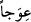

elde etmek ve onu memnun etmek için değil, meşrû şekilde yaratılış gayesine uygun
olarak, Hak Teâlâ’ya ibâdet ve O’nun emrine boyun eğerek bütün uzuvları kullanmakla
olur.
Hâl ile hamd, ruh ve kalb ile olandır. İlmî ve amelî kemâlât ile vasıflanmak ve ilâhî
ahlâkla ahlâklanmakla olur. Çünkü insanlara nefislerinin ve zâtlarının kemâl sıfatları
kazanması için peygamberlerin dili ile ilâhî ahlâkla ahlâklanmaları emredilmiştir.
Hakîkatte bu, kendisinden farklı olmaması bakımından mezâhir denilen tafsîlî makamıda
Hakk’ın kendisini övmesidir. O’nun cem makâmında zâtına sözlü olarak hamdi ise
kendisini peygamberlerine verdiği ilâhî kitaplarda ve sahifelerde kemâl sıfatlarla târif
etmesidir. O’nun zâtını fiilen övmesi, cemâl ve celâlle ilgili kemâlâtını sıfatlarının ve
isimlerinin âyetlerinin tezâhürlerinde gaybından şehâdetine, bâtınından zâhirine,
ilminden aynına ızhâr etmesidir. Hâl ile zâtını övmesi, ilk feyz-i akdes ile zâtında tecellî
etmesi ve ezelî nûrun zuhûrudur. Esasen cem‘ ve tafsîl olarak hamd eden ve hamd edilen
O’dur.
Molla Câmî der ki:
O yerde ki Senin kemâl-i kibriyân ola,
Âlem, Senin ihsan denizinden bir nem olur.
Bizim ne haddimize Sana hamd ü senâ etmek
Senin hamd ü senân Sana lâyıktır
“Kulu” mutlak anlamda hakîkî kul olmaya ehil olan, mâsivallahın hepsinde hür olan
Muhammed (s.a.)’e “Kitab’ı” yâni Kur’ân’ı “indirdi.” Bu sebeple bütün
peygamberlerin “nefsim, nefsim” dedikleri dehşetli günde o, “ümmetî, ümmetî”[157]
diyecektir. Burada işaret vardır ki insanlara Hakk’ı tebliğ ile görevlendirilen
peygamberin durumu, kendisini gönderen zâta kul olmaktır. Yoksa hristiyanların Îsâ
(a.s.) hakkında iddiâ ettikleri gibi değil.
Kur’an ‘Kitab’ ismi verilmeye lâyıktır. Hamde müstahak olma, Kur’an’ın inzâline
bağlanmıştır. Bu, Kur’an’ın Allah’ın en büyük nimetlerinden olduğuna işarettir. Çünkü
iki cihan saâdeti ondadır.
“Ve ona” Kur’an’a “hiçbir eğrilik” nazmında bir ahenksizlik, birbirini tutmayan bir
anlam karışıklığı ya da haktan bâtıla meyil “koymadı.”
Hafs, Âsım’dan rivâyetle “ ıvecen”de “sekte” olmasını tercih etmiştir. Bu, ondan
sonrasının onun sıfatı olduğu vehmedilmesin diye nefes almaksızın yapılan latîf bir
vakfedir. Yine o, “ min merkadinâ” (Yâsîn, 36/52)’da sekteyi tercih etmiştir.
Çünkü “hâzâ” lafzı ile “merkadinâ”ya işaret edildiği vehmedilmemesi için tamamen kat‘
da vasl da âyetteki iki söz arasında güzel olmamaktadır.